library(fmggp2)
library(ggplot2)
showtext::showtext_auto()Every converted chapter in ggplot2: field manual uses simulated data with a late 90s theme, and each dataset gets a ggplot2 theme to match. This vignette shows each theme with the data from the chapter that introduced it.
Game Boy
theme_gameboy() uses the four shades of green from the original Game Boy screen and the pixel font Press Start 2P, which ships with fmggp2. Below we simulate the starter chosen by 300 Pokémon Red and Blue players.
set.seed(1998)
pokemon_starters <- data.frame(
starter = sample(c("Bulbasaur", "Charmander", "Squirtle"),
size = 300, replace = TRUE, prob = c(0.30, 0.42, 0.28))
)
ggplot(pokemon_starters, aes(x = starter, fill = starter)) +
geom_bar(show.legend = FALSE) +
labs(title = "Pokemon Red and Blue (simulated)",
subtitle = "Starter chosen by 300 players",
x = "Starter", y = "Count") +
theme_gameboy(base_size = 13)
Windows 98
theme_win98() draws the plot as a Windows 98 window sitting on the teal desktop. The title sits in a navy title bar, the plot area is white, and bars and lines are navy by default. Below we simulate 300 AOL dial up sessions (in minutes) from a normal distribution.
set.seed(1014)
aol_sessions <- data.frame(
minutes = round(rnorm(n = 300, mean = 45, sd = 12))
)
ggplot(aol_sessions, aes(x = minutes)) +
geom_histogram(bins = 30) +
labs(title = "AOL dial up sessions (simulated)",
subtitle = "Distribution of session length",
x = "Session length (minutes)") +
theme_win98(base_size = 13)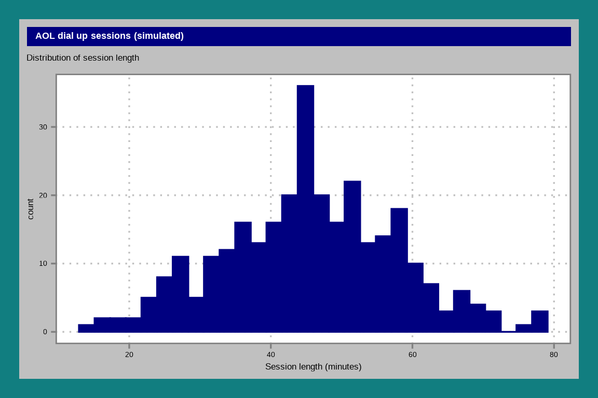
Discrete fills follow the desktop palette (gray, navy, then teal).
aol_ranges <- data.frame(
range = factor(c("under 33", "33 to 56", "57 and over"),
levels = c("under 33", "33 to 56", "57 and over")),
n = c(47, 193, 60)
)
ggplot(aol_ranges, aes(x = n, y = "300 sessions", fill = range)) +
geom_col(position = position_stack(reverse = TRUE)) +
labs(x = "Number of sessions", y = NULL, fill = "Minutes") +
theme_win98(base_size = 13)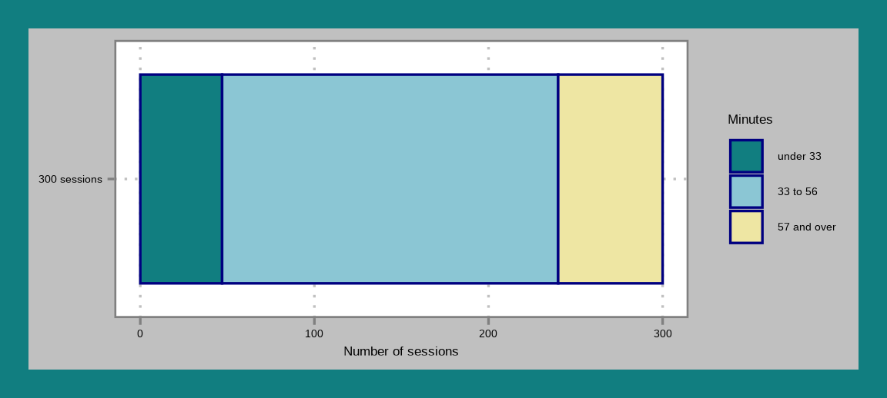
Napster
theme_napster() borrows the dark 1999 Napster client: a near black window, white text, a dotted gray grid, and lime marks. Below we simulate 300 MP3 downloads over a 56k modem from a right skewed gamma distribution.
set.seed(1999)
napster_downloads <- data.frame(
minutes = round(rgamma(n = 300, shape = 4, rate = 0.5), 1)
)
ggplot(napster_downloads, aes(x = minutes)) +
geom_freqpoly(bins = 30) +
labs(title = "Napster MP3 downloads (simulated)",
subtitle = "Download time over a 56k modem",
x = "Download time (minutes)") +
theme_napster(base_size = 13)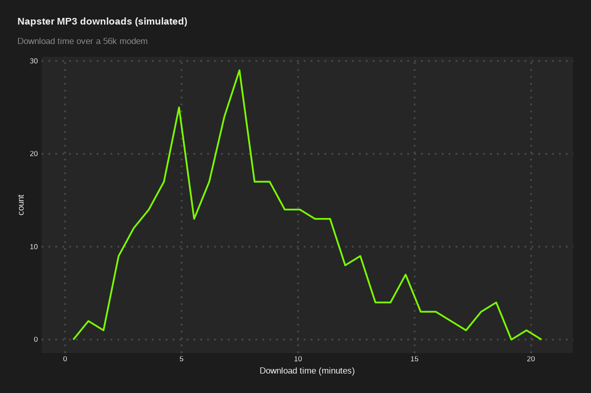
Blockbuster
theme_blockbuster() uses Blockbuster Video blue and yellow. Below we simulate weekly rentals for 60 households from a Poisson distribution.
set.seed(1993)
blockbuster_rentals <- data.frame(rentals = rpois(n = 60, lambda = 3))
ggplot(blockbuster_rentals, aes(x = rentals)) +
geom_dotplot(binwidth = 1, dotsize = 0.3) +
labs(title = "Blockbuster Video (simulated)",
x = "Number of rentals") +
theme_blockbuster(base_size = 13)
Spice Girls
theme_spice() uses hot pink, purple, and gold. Below we simulate the ages of 400 fans at a 1998 concert as a mix of kids and parents.
set.seed(1998)
kid <- runif(400) < 0.65
spice_fans <- data.frame(age = round(ifelse(kid, rnorm(400, 11, 2.5), rnorm(400, 37, 6))))
ggplot(spice_fans, aes(x = age)) +
geom_density() +
labs(title = "Spice World tour (simulated)",
x = "Age (years)") +
theme_spice(base_size = 13)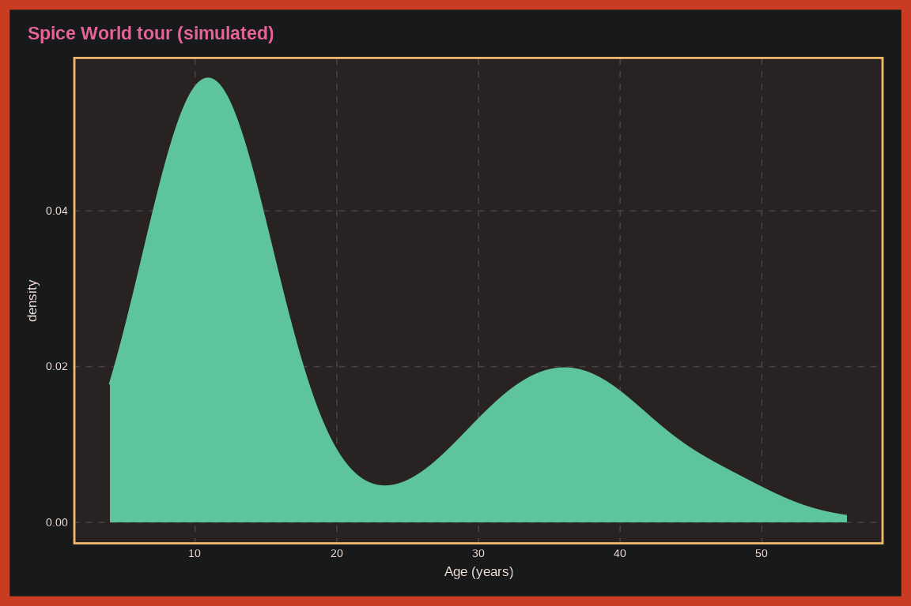
Beanie Babies
theme_beanie() uses the red and gold of a Beanie Babies heart tag. Below we simulate 300 resale prices from a log normal distribution.
set.seed(1996)
beanie_prices <- data.frame(price = rlnorm(n = 300, meanlog = log(15), sdlog = 0.8))
ggplot(beanie_prices, aes(x = "", y = price)) +
geom_violin() +
labs(title = "Beanie Babies resale prices (simulated)",
x = NULL, y = "Price (USD)") +
theme_beanie(base_size = 13)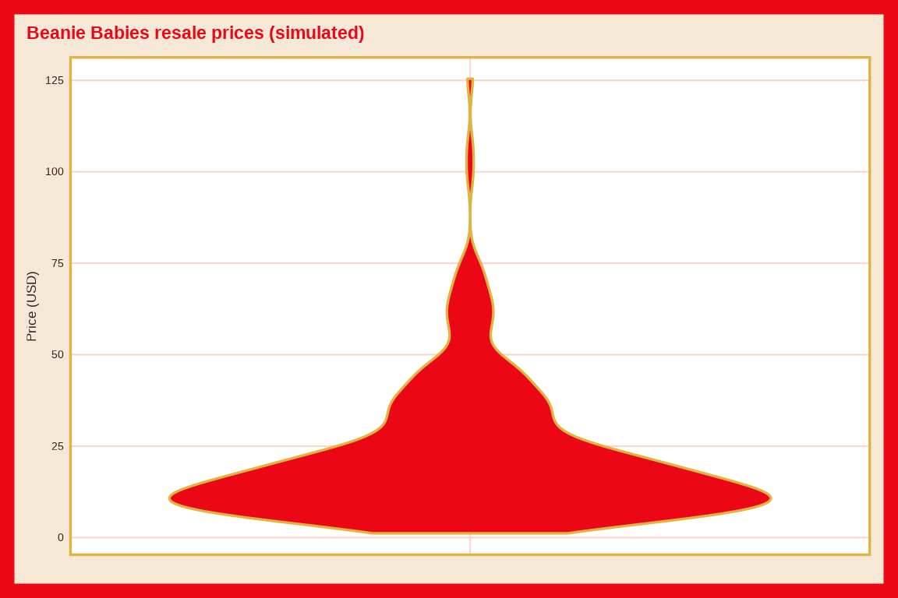
Nintendo 64
theme_n64() uses controller gray and the four logo colors. Below we simulate 200 Mario Kart 64 lap times from a heavy tailed t distribution.
set.seed(64)
mario_kart_laps <- data.frame(seconds = 45 + 2 * rt(n = 200, df = 3))
ggplot(mario_kart_laps, aes(x = "", y = seconds)) +
geom_boxplot() +
labs(title = "Mario Kart 64 (simulated)",
x = NULL, y = "Lap time (seconds)") +
theme_n64(base_size = 13)
Jurassic Park
theme_jurassic() uses the Jurassic Park Post Office souvenir sheet: black, logo red, stamp yellow, and sunset orange. Below we simulate the total weight of the dinosaurs in each paddock.
set.seed(1993)
jp_paddocks <- data.frame(species = c("Brachiosaurus", "Triceratops", "Tyrannosaurus"),
total_tons = c(sum(rnorm(3, 40, 5)), sum(rnorm(5, 9, 1.2)), sum(rnorm(2, 8, 1))))
ggplot(jp_paddocks, aes(x = species, y = total_tons, fill = species)) +
geom_col(show.legend = FALSE) +
labs(title = "Jurassic Park (simulated)", x = "Paddock", y = "Total weight (tons)") +
theme_jurassic(base_size = 13)
Happy Meals
theme_happymeal() uses the red and yellow of a Happy Meal box. Below we simulate average daily Happy Meal sales for four toy promotions.
set.seed(1997)
happy_meals <- data.frame(promotion = c("Teenie Beanie Babies", "Furby", "Hot Wheels", "Inspector Gadget"),
avg_sold = sapply(c(420, 310, 220, 180), function(l) mean(rpois(28, l))))
ggplot(happy_meals, aes(x = promotion, y = avg_sold, fill = promotion)) +
geom_col(show.legend = FALSE) +
labs(title = "Happy Meals (simulated)", x = "Toy promotion", y = "Average sold per day") +
theme_happymeal(base_size = 13)
Friends
theme_friends() uses Monica’s purple walls, a yellow frame, and the logo dot colors. Below we simulate viewers per episode for three seasons.
set.seed(1994)
friends_episodes <- data.frame(season = rep(c("Season 1", "Season 3", "Season 5"), each = 24))
friends_episodes$viewers_m <- round(rnorm(72, rep(c(22, 27, 24), each = 24), 2.5))
ggplot(friends_episodes, aes(x = viewers_m, fill = season)) +
geom_bar() +
labs(title = "Friends (simulated)", x = "Viewers (millions)", y = "Episodes", fill = "Season") +
theme_friends(base_size = 13)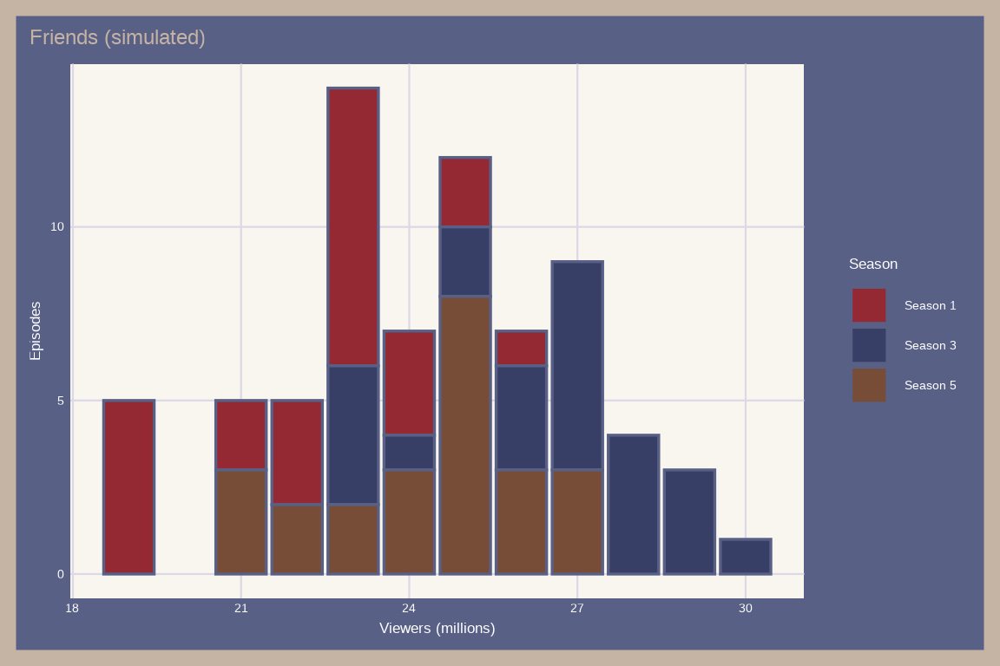
Fresh Prince
theme_freshprince() puts graffiti neon on deep purple, and its continuous fill runs from teal to hot pink. Below we simulate how often the Carlton dance shows up each season.
set.seed(1990)
fp <- expand.grid(season = 1:6, gag = c("Will flirts", "Carlton dance"))
fp$occurrences <- rbinom(12, 24, ifelse(fp$gag == "Will flirts", 0.9, plogis(-2.2 + 0.5 * (fp$season - 3.5))))
ggplot(fp, aes(x = season, y = gag, fill = occurrences)) +
geom_tile() +
labs(title = "Fresh Prince (simulated)", x = "Season", y = NULL, fill = "Episodes") +
theme_freshprince(base_size = 13)
Pogs
theme_pogs() uses a cardboard background and bright milk cap prints. Below we simulate a collection of 100 Pogs.
set.seed(1993)
pogs <- data.frame(type = sample(c("Milk caps", "Printed pogs", "Holographic", "Slammers"),
100, replace = TRUE, prob = c(0.45, 0.30, 0.15, 0.10)))
ggplot(pogs, aes(x = type, fill = type)) +
geom_bar(show.legend = FALSE) +
labs(title = "A Pogs collection (simulated)", x = NULL, y = "Pieces") +
theme_pogs(base_size = 13)
Sony Walkman
theme_walkman() uses the Sports Walkman photo: a cobalt blue backdrop with white grid lines, sports yellow, and play button green. Below we simulate median battery life for three models and two battery types.
set.seed(1979)
walkman <- data.frame(model = rep(c("WM-2", "WM-F45 Sports", "WM-EX194 Mega Bass"), times = 2),
battery = rep(c("Alkaline", "Rechargeable"), each = 3), hours = c(10, 16, 22, 7, 12, 17) + rnorm(6, 0, 0.5))
ggplot(walkman, aes(x = hours, y = model)) +
geom_line(aes(group = model)) +
geom_point(aes(color = battery), size = 3) +
labs(title = "Sony Walkman (simulated)", x = "Median battery life (hours)", y = NULL, color = "Battery") +
theme_walkman(base_size = 13)
Encarta and Britannica
theme_encarta(): MindMaze from Encarta 97, with slate stone, parchment, a carved brown frame, and gold, and a Georgia title.
p_encarta <- 0.8 * plogis(-2 + 0.6 * (0:6))
enc <- data.frame(year = factor(rep(1993:1999, 2)),
choice = rep(c("Encarta", "Britannica"), each = 7),
share = c(p_encarta, -(0.8 - p_encarta)))
ggplot(enc, aes(x = year, y = share, fill = choice)) +
geom_col(width = 0.5) +
labs(title = "Encarta vs. Britannica (simulated)", x = NULL, y = "Share", fill = NULL) +
theme_encarta(base_size = 13)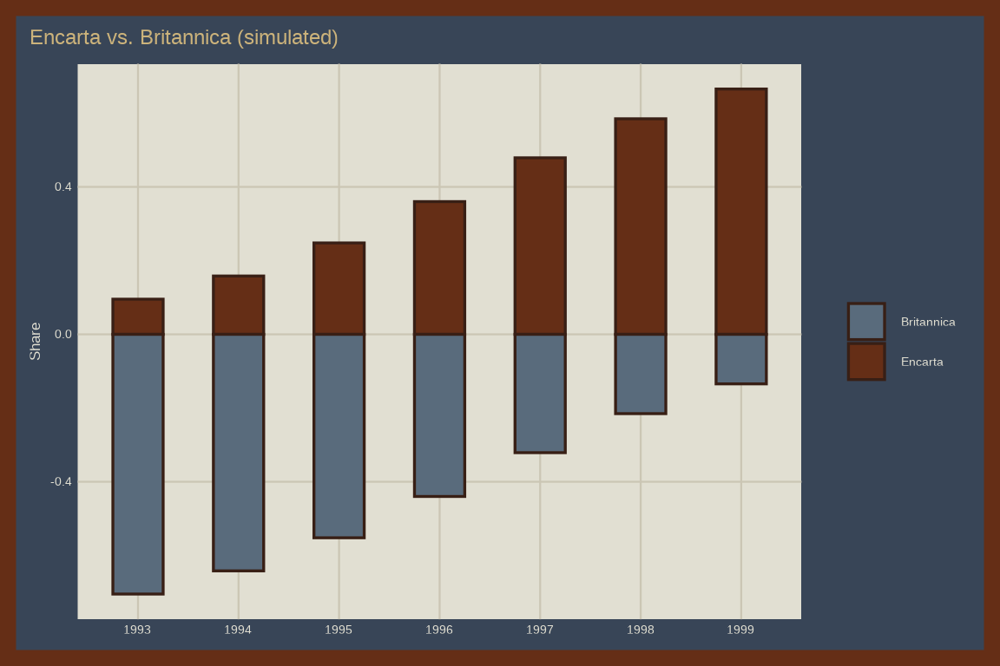
Netscape
theme_netscape(): the Netscape Navigator night sky with star yellow, teal, magenta, and meteor orange and a Times New Roman title.
set.seed(1996)
modem <- sample(c("14.4k", "28.8k", "56k"), 600, replace = TRUE, prob = c(0.25, 0.45, 0.30))
speeds <- data.frame(modem = modem,
kbps = rnorm(600, c(`14.4k` = 13, `28.8k` = 26, `56k` = 44)[modem], c(`14.4k` = 1.2, `28.8k` = 2.5, `56k` = 5)[modem]))
ggplot(speeds, aes(x = kbps, after_stat(count), fill = modem)) +
geom_density(position = "fill") +
labs(title = "Dial up speeds (simulated)", x = "Speed (kbps)", fill = "Modem") +
theme_netscape(base_size = 13)
Titanic
theme_titanic(): the Titanic’s original paint colors (hull black, hull stripe gold, canvas, antifouling red, White Star buff, and funnel gray) with a Big Caslon title.
set.seed(1997)
fans <- data.frame(age_group = sample(c("Teen", "Adult"), 300, replace = TRUE),
viewings = sample(c("Once", "Twice", "3+ times"), 300, replace = TRUE))
ggplot(fans, aes(x = age_group, fill = viewings)) +
geom_bar(position = "fill") +
labs(title = "Titanic (simulated)", x = NULL, y = "Share", fill = "Viewings") +
theme_titanic(base_size = 13)
Lisa Frank
theme_lisafrank(): the Lisa Frank folder palette (purple, magenta, orange, yellow, and white) with a Chalkboard title.
set.seed(1993)
keepers <- data.frame(design = sample(c("Rainbow leopards", "Unicorns", "Dolphins", "Pandas"),
200, replace = TRUE, prob = c(1/2, 1/4, 1/8, 1/8)))
ggplot(keepers, aes(x = design, fill = design)) +
geom_bar(show.legend = FALSE) +
labs(title = "Trapper Keepers (simulated)", x = NULL, y = "Sold") +
theme_lisafrank(base_size = 13)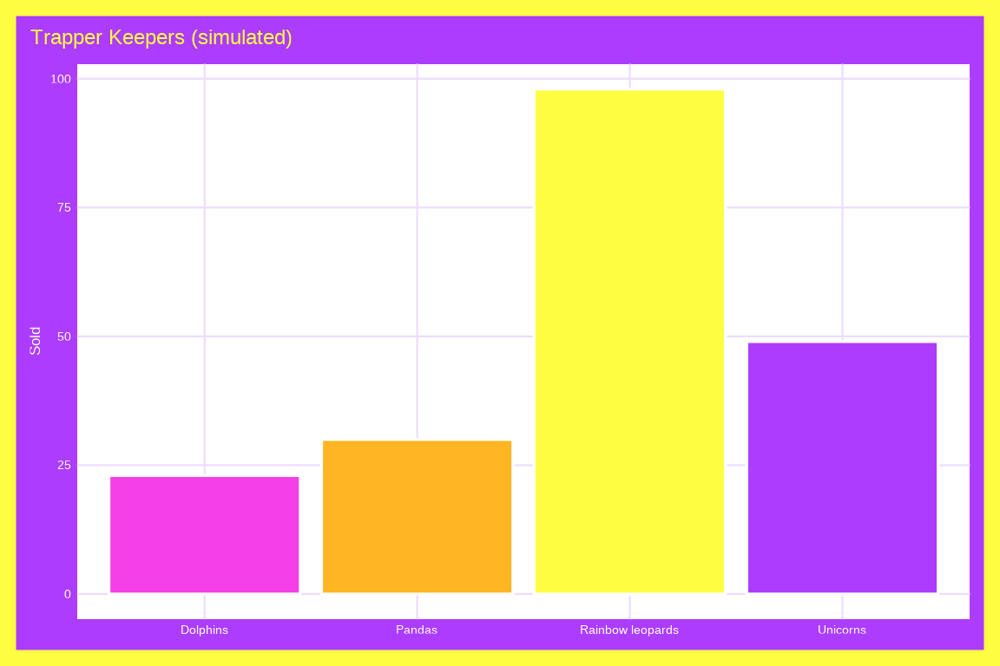
Toys”R”Us
theme_toysrus(): Toys”R”Us white and blue with the multicolored logo letters as marks and a Phosphate title.
set.seed(1999)
toys <- data.frame(toy = c("Furby", "Beanie Babies", "Game Boy Color", "Nintendo 64"),
units = rpois(4, c(1800, 2400, 1200, 1000)))
ggplot(toys, aes(x = toy, y = units, fill = toy)) +
geom_col(show.legend = FALSE) +
labs(title = "Toys\"R\"Us 1998 (simulated)", x = NULL, y = "Units sold") +
theme_toysrus(base_size = 13)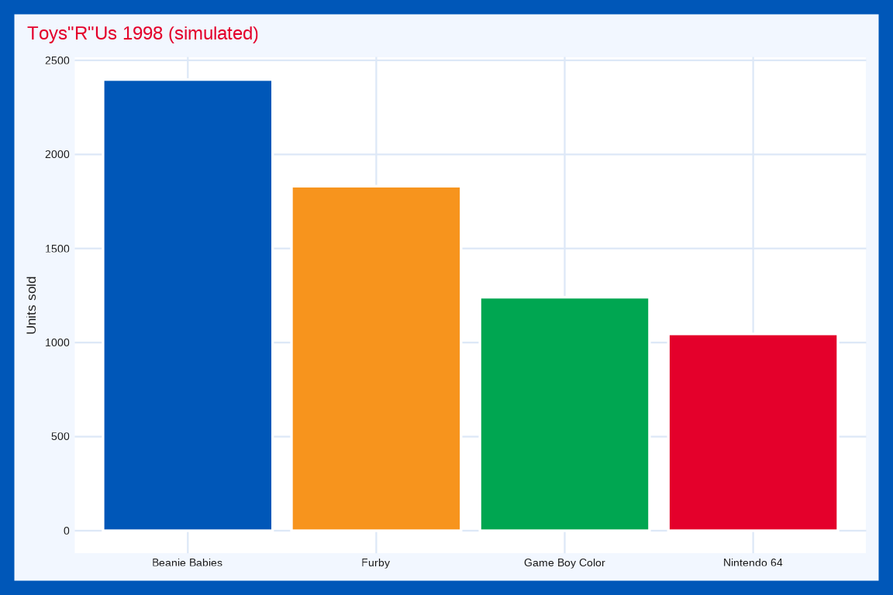
Tamagotchi
theme_tamagotchi(): a lilac egg shell and a gray green LCD screen. Below we simulate Tamagotchi lifespans from a Weibull distribution.
set.seed(1997)
pets <- data.frame(care = rep(c("Neglected", "Pampered"), each = 150))
pets$days <- rweibull(300, shape = 2.2, scale = ifelse(pets$care == "Neglected", 6, 21))
ggplot(pets, aes(x = days, fill = care)) +
geom_histogram(alpha = 2/3, position = "identity", bins = 40) +
labs(title = "Tamagotchi lifespans (simulated)", x = "Days", fill = "Care") +
theme_tamagotchi(base_size = 13)
Super Soaker
theme_supersoaker(): neon orange plastic, water blue, and neon green. Below we simulate Super Soaker ranges for two models.
set.seed(1990)
shots <- data.frame(model = rep(c("SS 50", "CPS 2000"), each = 200))
shots$feet <- rnorm(400, ifelse(shots$model == "SS 50", 25, 45), ifelse(shots$model == "SS 50", 3, 5.4))
ggplot(shots, aes(x = feet, color = model)) +
geom_freqpoly(binwidth = 2, linewidth = 1) +
labs(title = "Super Soaker range (simulated)", x = "Range (feet)", color = "Model") +
theme_supersoaker(base_size = 13)
Goosebumps
theme_goosebumps(): haunted purple and slime green. Below we simulate Goosebumps books read by two grades.
set.seed(1992)
readers <- data.frame(grade = rep(c("3rd grade", "5th grade"), each = 40))
readers$books <- rpois(80, ifelse(readers$grade == "3rd grade", 3, 9))
ggplot(readers, aes(x = books, fill = grade)) +
geom_dotplot(method = "histodot", binwidth = 1, stackgroups = TRUE, binpositions = "all") +
labs(title = "Goosebumps (simulated)", x = "Books read", fill = "Grade") +
theme_goosebumps(base_size = 13)
Tetris
theme_tetris(): a black well and the seven tetromino colors. Below we simulate lines cleared from a negative binomial distribution.
set.seed(1989)
games <- data.frame(player = rep(c("Casual", "Expert"), each = 80))
games$lines <- rnbinom(160, size = 5, mu = ifelse(games$player == "Casual", 25, 120))
ggplot(games, aes(x = player, y = lines, color = player)) +
geom_jitter(width = 0.2, show.legend = FALSE) +
labs(title = "Tetris (simulated)", x = NULL, y = "Lines cleared") +
theme_tetris(base_size = 13)
Furby
theme_furby(): purple fur, teal, orange, and pink. Below we simulate Furby chatter in two languages.
set.seed(1998)
chatter <- data.frame(language = rep(c("Furbish", "English"), times = c(180, 120)))
chatter$words <- rnorm(300, ifelse(chatter$language == "Furbish", 45, 30), ifelse(chatter$language == "Furbish", 8, 10))
ggplot(chatter, aes(x = words, after_stat(count), fill = language)) +
geom_density(alpha = 1/2) +
labs(title = "Furby chatter (simulated)", x = "Words per hour", fill = "Language") +
theme_furby(base_size = 13)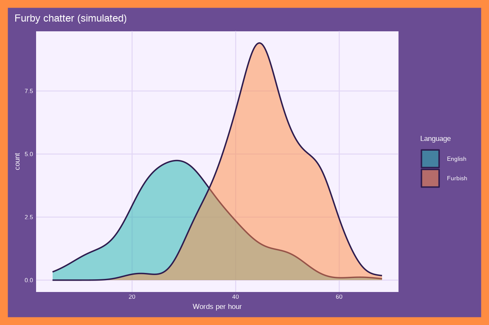
MTV TRL
theme_trl(): a black studio, MTV yellow, and neon colors. Below we simulate days on the countdown from a gamma distribution.
set.seed(1998)
videos <- data.frame(genre = rep(c("Rock", "Rap", "Boy bands"), each = 60))
videos$days <- rgamma(180, shape = 2.5, scale = c(Rock = 12, Rap = 22, `Boy bands` = 40)[videos$genre] / 2.5)
ggplot(videos, aes(x = days, fill = genre)) +
geom_density(alpha = 2/3) +
labs(title = "MTV TRL (simulated)", x = "Days on the countdown", fill = "Genre") +
theme_trl(base_size = 13)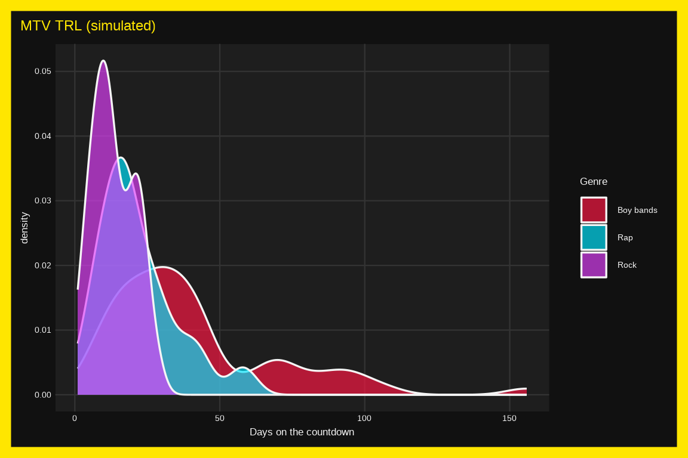
Oregon Trail
theme_oregontrail(): an Apple II screen with phosphor green text. Below we simulate days to reach Oregon from a log normal distribution.
set.seed(1985)
trips <- data.frame(profession = rep(c("Banker", "Carpenter", "Farmer"), each = 100))
trips$days <- rlnorm(300, log(c(Banker = 140, Carpenter = 155, Farmer = 170)[trips$profession]), 0.2)
ggplot(trips, aes(x = profession, y = days, fill = profession)) +
geom_boxplot(alpha = 2/3, show.legend = FALSE) +
labs(title = "The Oregon Trail (simulated)", x = NULL, y = "Days") +
theme_oregontrail(base_size = 13)
AIM
theme_aim(): the yellow running man, AOL blue, and a white chat window. Below we simulate buddy list sizes with different shapes.
set.seed(1997)
buddies <- data.frame(school = rep(c("Middle school", "College"), each = 150))
buddies$n <- ifelse(buddies$school == "Middle school", rpois(300, 20), ifelse(runif(300) < 0.7, rnorm(300, 60, 10), rnorm(300, 150, 20)))
ggplot(buddies, aes(x = school, y = n, fill = school)) +
geom_violin(alpha = 2/3, show.legend = FALSE) +
labs(title = "AIM buddy lists (simulated)", x = NULL, y = "Buddies") +
theme_aim(base_size = 13)
Magic Eye
theme_magiceye(): deep indigo and psychedelic magenta, teal, and orange. Below we simulate seconds to see the hidden image on two tries.
set.seed(1993)
tries <- data.frame(try = rep(c("First", "Second"), each = 100))
tries$seconds <- rlnorm(200, log(ifelse(tries$try == "First", 40, 20)), 0.5)
ggplot(tries, aes(x = seconds, y = try, fill = try)) +
geom_boxplot(width = 0.3, show.legend = FALSE) +
labs(title = "Magic Eye (simulated)", x = "Seconds", y = NULL) +
theme_magiceye(base_size = 13)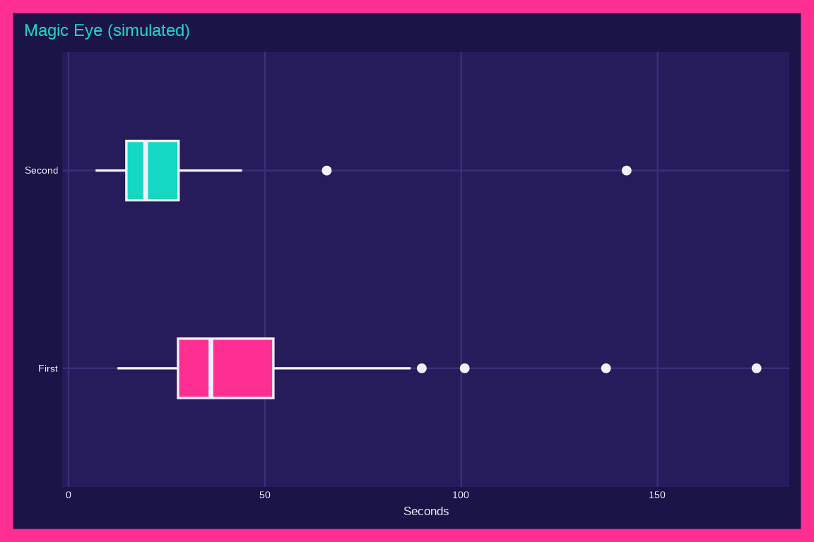
Batman
theme_batman(): the Batman (1989) palette: black, gold, orange, and steel. Below we simulate bat signal sightings over a week.
set.seed(1989)
signals <- data.frame(night = factor(c("Mon", "Tue", "Wed", "Thu", "Fri", "Sat", "Sun"), levels = c("Mon", "Tue", "Wed", "Thu", "Fri", "Sat", "Sun")), sightings = rpois(7, 12))
ggplot(signals, aes(x = night, y = sightings)) +
geom_col() +
labs(title = "Bat signal sightings (simulated)", x = NULL, y = "Sightings") +
theme_batman(base_size = 13)
Fonts
theme_gameboy() and theme_tetris() use Press Start 2P, which ships with fmggp2. The other themes use fonts that ship with macOS and Windows.
These themes use a single font family:
- Tahoma (
theme_win98()) - Verdana (
theme_napster()) - Trebuchet MS (
theme_spice()) - Comic Sans MS (
theme_beanie())
These themes use Arial for the body text and a display font for the title:
- Impact (
theme_blockbuster()) - Arial Black (
theme_n64()andtheme_freshprince()) - Herculanum (
theme_jurassic()) - Arial Rounded (
theme_happymeal()) - Chalkduster (
theme_friends()) - Bradley Hand (
theme_pogs()) - DIN Condensed (
theme_walkman()) - Georgia (
theme_encarta()) - Times New Roman (
theme_netscape()) - Big Caslon (
theme_titanic()) - Chalkboard (
theme_lisafrank()) - Phosphate (
theme_toysrus()) - Futura (
theme_tamagotchi()) - Arial Black (
theme_supersoaker()) - Trattatello (
theme_goosebumps()) - Chalkboard SE (
theme_furby()) - Impact (
theme_trl()) - Andale Mono (
theme_oregontrail()) - Arial Rounded (
theme_aim()) - Skia (
theme_magiceye()) - DIN Condensed (
theme_batman())
When a font file can’t be found, the theme falls back to "sans", so the plots above still render on Linux. You can also pass any family you’ve registered with sysfonts::font_add():
theme_win98(base_family = "sans")Using a theme for a whole chapter
Each chapter sets its theme once in the setup chunk with theme_set(), so the plotting code in the chapter doesn’t need a theme_*() call.
ggplot2::theme_set(fmggp2::theme_win98(base_size = 15))